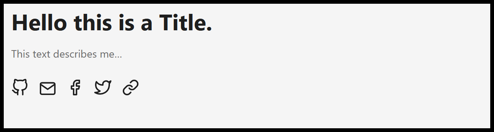
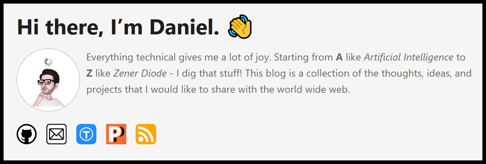

A quick guide on how to customize the Home-Info field of the Hugo PaperMod theme.
The Hugo PaperMod theme has become a quite popular blog theme since 2021. In fact, also this blog is built on the Hugo framework in combination with the PaperMod theme. In my opinion, the optional Home-Info mode is the most beautiful layout you can choose in this theme (see below).

However, two things slightly bother me. First, it would be nice if there was the option to add a profile picture next to the text. And the second improvement I would wish for is the option to use custom social link icons.
Hence, I developed the following solution for me. I simply use HTML formatting in config-file where the homeInfoParams: are described. This way, it is super easy to create a custom design for this layout. In order to get this working properly, it must be ensured that the markup goldmark renderer supports HTML.
Here is my example configuration for the goldmark renderer (in config.yaml):
markup:
goldmark:
extensions:
definitionList: true
footnote: true
linkify: true
strikethrough: true
table: true
taskList: true
typographer: true
parser:
attribute:
block: false
title: true
autoHeadingID: true
autoHeadingIDType: github
renderer:
hardWraps: false
unsafe: true # <- this enables HTML rendering
xhtml: false
After changing this you can use HTML syntax in the homeInfoParams: config (in config.yaml):
homeInfoParams:
Title: Hi there, I'm Daniel. 👋
Content: >
<div> <!--- profile picture and text --->
<p style="float: left; padding-right: 10px;">
<img src="me_ar_sticker.webp" height="100px" width="100px">
</p>
<p>
Everything technical gives me a lot of joy. Starting from <b>A</b> like <i>Artificial Intelligence</i> to <b>Z</b> like <i>Zener Diode</i> - I dig that stuff!
This blog is a collection of the thoughts, ideas, and projects that I would like to share with the world wide web.
</p>
</div>
<div> <!--- social icons start here --->
<a href="https://github.com/dadul96">
<p style="float: left; padding-top: 20px; padding-right: 15px;">
<img alt="github_icon.webp" src="github_icon.webp" width="32" height="32">
</p>
</a>
<a href="mailto:daniel.duller@gmx.net">
<p style="float: left; padding-top: 20px; padding-right: 15px;">
<img alt="email_icon.webp" src="email_icon.webp" width="32" height="32">
</p>
</a>
<a href="https://www.thingiverse.com/dadul96/designs">
<p style="float: left; padding-top: 20px; padding-right: 15px;">
<img alt="thingiverse_icon.webp" src="thingiverse_icon.webp" width="32" height="32">
</p>
</a>
<a href="https://www.prusaprinters.org/social/192589-dadul96/about">
<p style="float: left; padding-top: 20px; padding-right: 15px;">
<img alt="prusaprinters_icon.webp" src="prusaprinters_icon.webp" width="32" height="32">
</p>
</a>
<a href="https://dadul96.github.io/index.xml">
<p style="float: left; padding-top: 20px; padding-right: 15px;">
<img alt="rss_icon.webp" src="rss_icon.webp" width="32" height="32">
</p>
</a>
</div>
The icons which you use in the HTML code are stored in “hugo_project_name/static/”.
As a result, you would get a design that is similar to my currently used one: 